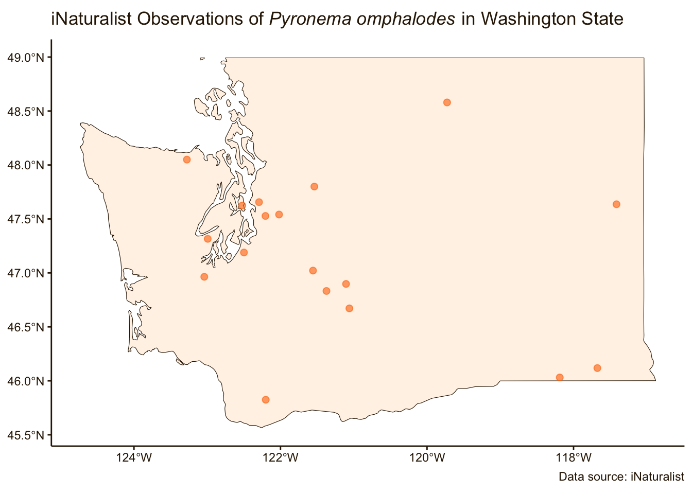
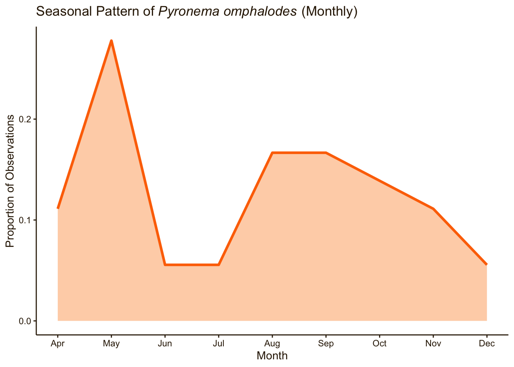

Pyronema omphalodes
Date: October 13, 2025
1. Taxonomy & Nomenclature
- Scientific Name (current): Pyronema omphalodes
- Synonyms / Former Names: Pyronema confluens, Aleuria omphalodes, Humaria omphalodes, Peziza confluens, Peziza omphalodes, Peziza rosella, Pyronema marianum, Tapesia omphalodes
- Common Name(s): Does not have a widely recognized common name
- Taxonomic Authority / Citation: Does not have a widely recognized common name Taxonomic authority: First discovered by Pierre Bulliard in 1790 and named Peziza omphalodes. In 1870, Leopold Fuckel built on Bulliard’s description, and the species was renamed Pyronema omphalodes.
- Higher Classification (Kingdom / Phylum / Class / Order / Family): Kingdom Fungi, Phylum Ascomycota, Class Pezizomycetes, Order Pezizales, Family Pyronemataceae
2. Morphology & Identification
- Fruiting Body Description: salmon pink to bright orange, bumpy, growing in dense clumps disc- or cushion- shaped, hairless fruiting body
- Cap / Pileus Characteristics: No cap
- Gills / Pores / Spines / Teeth / Etc.: N/A
- Stipe / Stem / Attachment / Ring / Volva / Base: No stipe
- Spore Print Color: White
- Microscopic Features (if available): Spores smooth, ellipsoid, and lack lipid droplets
- Other Diagnostic Characters: Grows in recently burned areas
- Similar Species / Potential Confusions: May be confused with other species within the genus such as P. domesticum, but can be differentiated from P. omphalodes because it has larger spores and marginal hairs.
3. Distribution & Habitat in Washington
Range (counties or regions): Primarily in Western Washington with a few scattered sightings in the east
Geographic Distribution in WA: Found in previously forested areas after burns, and in areas popular for camping
Elevation Range: N/A (not enough info)
Habitat Types / Substrate Preferences: Pyronema omphalodes is typically found in post-burn forests or intact forests with campfires/burn pits that have burnt woody residue. They can also sometimes be found in greenhouses on steamed soil. The fungus feeds on burned soil and woody debris, such as charcoal and ash.
Host Associations (if applicable): No host
4. Seasonality & Phenology
Months of Fruiting in WA: Pyronema omphalodes can be seen fruiting most often in spring, as well as in August and September. The late summer sightings are the result of post-forest fire fruiting, which tends to occur about 1-2 weeks after the original burn.
Seasonal Notes: Pyronema omphalodes peak fruiting times tend to follow forest fire temporal patterns. The fungus tends to only appear in areas where the fire was most intense, resulting in small, congested masses at these microsites.

5. Ecology & Role
- Ecological Function: saprotrophic fungus
- Substrate / Decomposition Role: Found in post fire environments on burned soils. They play a key role in fire succession however this role is not fully understood. There is still ongoing research regarding how these Fungi are getting their carbon however there is strong evidence to suggest that they are using pyrogenic organic matter. By decomposing pyrogenic organic matter they are allowing this carbon to be available for plants whereas it would have been locked up otherwise. This allows for reintegration of other species of plants and animals after a fire because of increased nutrient availability. They also help with soil aggregation which is crucial after a fire because it prevents erosion.
- Interactions: N/A (no information)
- Environmental Sensitivity / Indicators: Indicates a recently burned area
6. Conservation, Abundance & Threats
- Abundance / Rarity in WA: Not abundant under normal circumstances, but it becomes extremely abundant and dominant in the soil fungal community following a fire. This species dominates soil fungal communities within weeks to months after fire. It is a pyrophilous fungi
- Conservation Status (state, federal, red list): Ranked as “Not of concern,” this species is not threatened nor is it a concern
- Threats / Pressures: Loss of habitat. Since Pyronema omphalodes has a very specific habitat for growth conditions, if post-fire environments and fire frequency was reduced, there would be less available habitat for Pyronema omphalodes to grow in.
- Management or Monitoring Notes: Pyronema are not a cultivated species or invasive in environments; they’re lifespans are short-lived and coincide with post-fire recovery. It’d be best to ensure their survival in a post-fire environment due to their abilities to aggregate the soil, decompose charred material, sequester carbon, and capture transient nitrogen pulses after fire.
7. Use / Ethnobiology / Toxicology
- Edibility / Toxicity: There’s no definitive answer on whether or not to eat Pyronema omphalodes, but most answers lead to no. They are not poisonous, but not recommended for consumption. While not poisonous to humans, there is no extensive research on the toxicology of P. omphalodes, so the toxicity to other organisms is unknown.
- Traditional / Cultural Uses: Unknown
- Medicinal / Bioactive Compounds: Mycrosporine compounds present: mycosporine glutamine (helps promote cell proliferation and repair skin damage from photoaging), normycosporine glutamine, and glucosylmycosporine glutaminol. While these specific compounds benefit the Fungi, there’s no evidence that they benefit humans.
- Cautions / Warnings: When looking for P. omphalodes, be cautious when entering areas with recent fire activity. Live embers or damaged snags could pose a fatal threat to your well-being.
8. References / Further Reading
- Key Literature Sources: Filialuna, O., & Cripps, C. (2021). Evidence that pyrophilous fungi aggregate soil after forest fire. Forest Ecology and Management, 498, 119579. https://doi.org/10.1016/j.foreco.2021.119579
- Fischer, M. S., Stark, F. G., Berry, T. D., Zeba, N., Whitman, T., & Traxler, M. F. (2021). Pyrolyzed Substrates Induce Aromatic Compound Metabolism in the Post-fire Fungus, Pyronema domesticum. Frontiers in Microbiology, 12. https://doi.org/10.3389/fmicb.2021.729289
- Field Guides / Online Resources:
Pyronema omphalodes - mushrooms of Eastern Texas. (2019). Texas Mushrooms. https://www.texasmushrooms.org/en/pyronema_omphalodes.htm - Pyronema omphalodes. (2025). INaturalist. https://www.inaturalist.org/taxa/384023-Pyronema-omphalodes#status-tab
- Pyronema omphalodes. (2025). Englishfungi.org. https://www.englishfungi.org/Species/Pyronema%20omphalodes
- Pyronema omphalodes (Bull.) Fuckel 1870 - Encyclopedia of Life. (2025). Eol.org. https://www.eol.org/pages/160287
- Pyronema Omphalodes. (2019). Pyronema Omphalodes. Google Docs. https://docs.google.com/spreadsheets/d/1169WIyBhetaam7bxmiZ5mzEqXbczuZbP4UXUJC3TJvA/edit?gid=0#gid=0
- Herbarium / Specimen Records (if applicable): N/A
9. Images / Illustrations
Fruiting Body Photos:
Pyronema omphalodes from above. Bright orange and lumpy; Photo credit: M. Wood
The mycelial network of Pyronema omphalodes found by turning over the charcoal it was growing on; Photo credit: F.D. Springwood
Habitat Photo:
A post-fire area with burned wood and soil; Photo credit: K. Bucko
Microscopy Photo (if available):
Pyronema omphalodes microscopy shows the smooth, ovular spores, Photo credit: Y. Uzun
10. Other Notes & Observations
- Questions / Uncertainties: Many mycologists and fire ecologists are studying P. omphalodes to figure out where they are getting their carbon, since post-fire soil lacks tends to lack it. Mycologists hypothesize that pyrolyzed organic matter is the carbon pool used for P. omphalodes to grow.
- Fun facts: The mycelium can bind ash and soil together, helping to reduce erosion in burned areas.